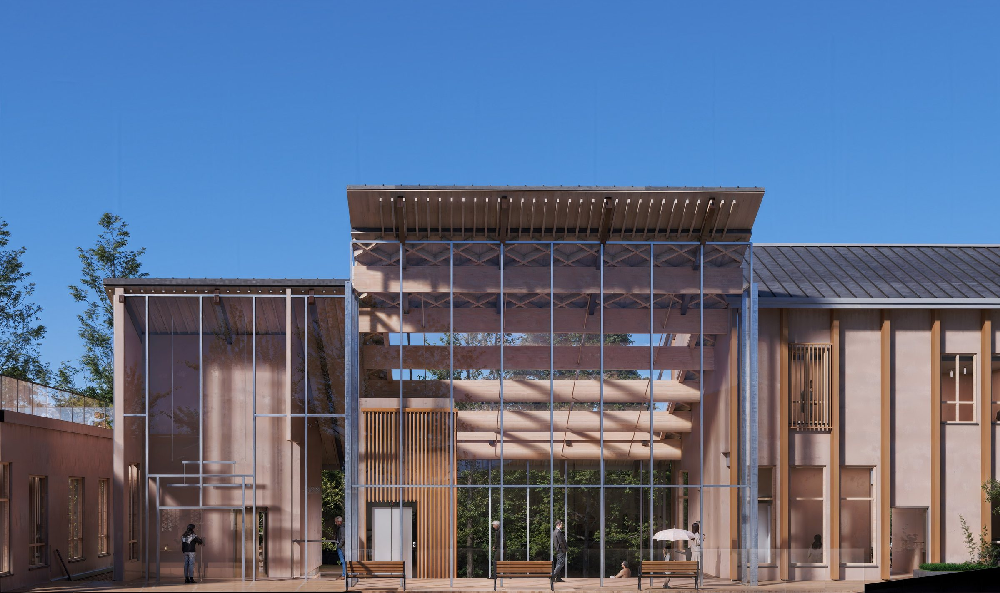
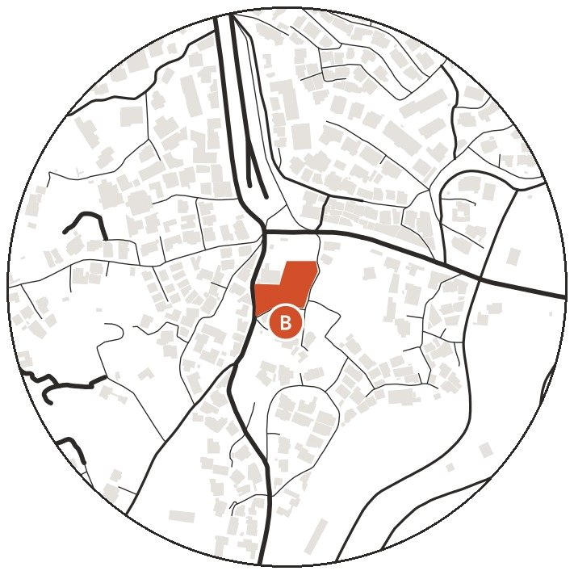
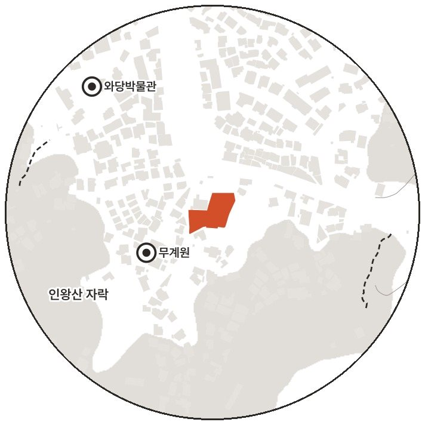
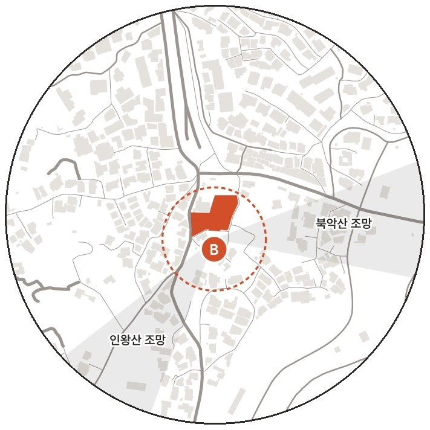
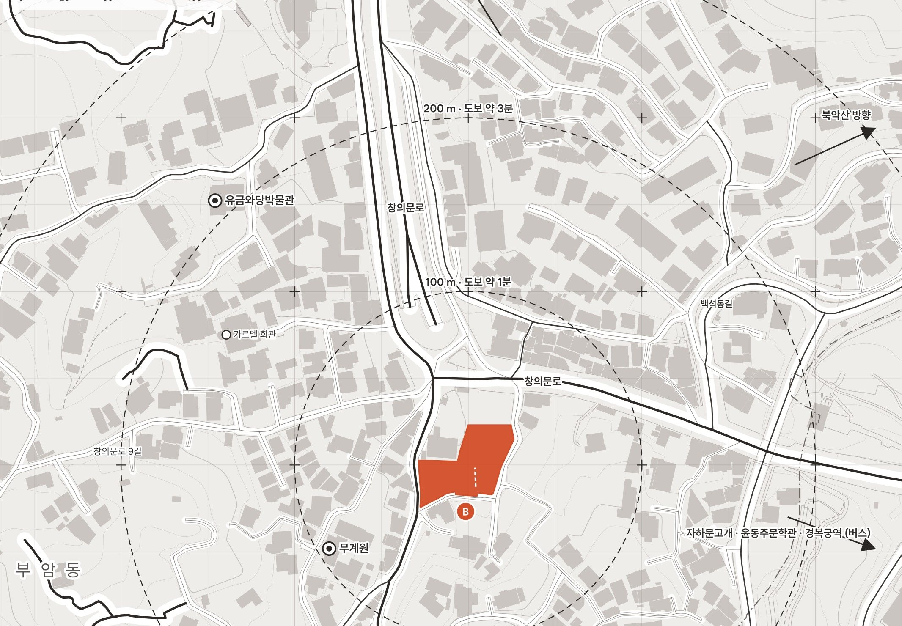
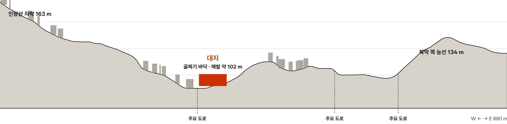
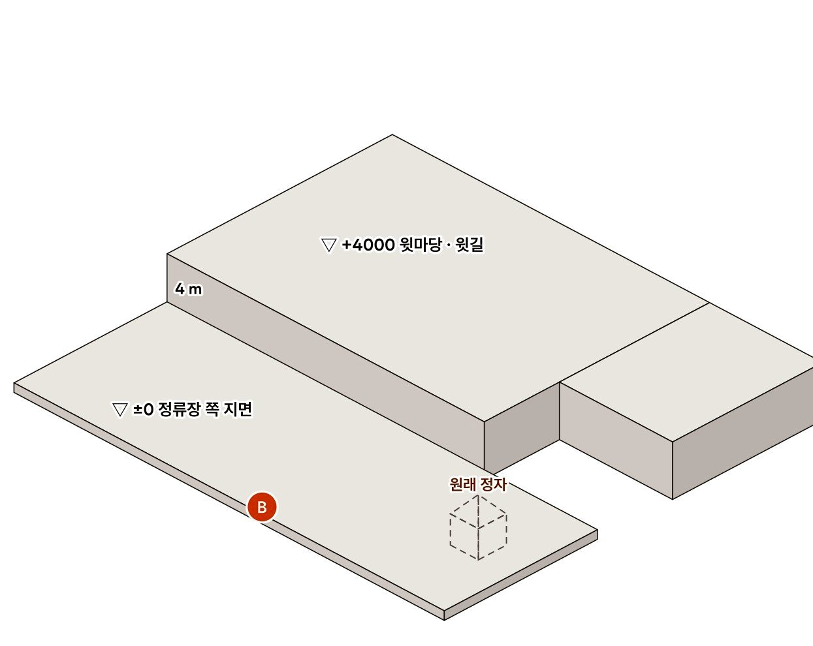
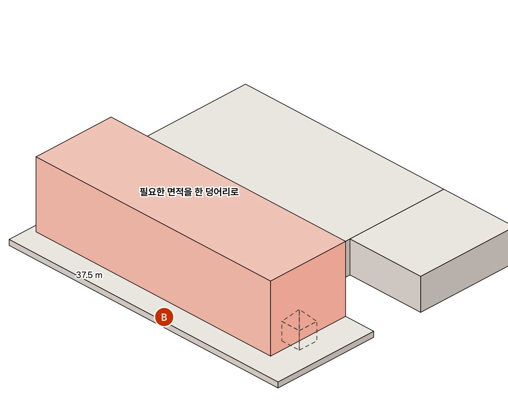
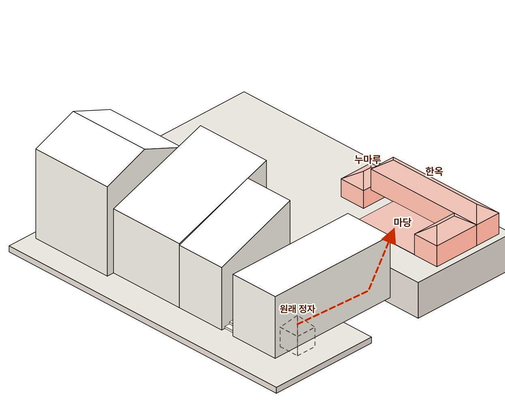
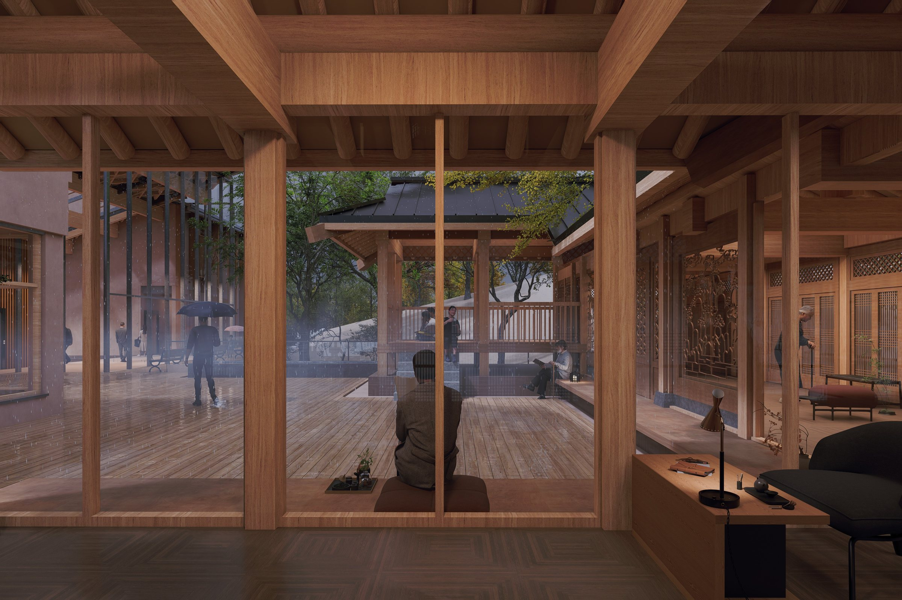

STOPOVER
- Location
- 서울 종로구 부암동
- Year
- 2022
- Type
- 공공청사 · 주민센터
- Status
- 2학년 2학기 설계스튜디오
- Team
- 개인
정류장 앞, 용건이 없어도 들러 쉬어 가는 주민센터
주민센터는 동네에서 가장 가까운 공공 건물이다. 민원을 처리하는 곳이면서, 주민이 모이고 머무는 동네의 거실이 될 수도 있다.
부암동의 이 자리에는 원래 주민센터와 정자가 있었다. 정류장 옆 정자는 버스를 기다리며 이웃과 쉬어 가던 마을 마당이었다.
이 주민센터는 그 쉼의 자리를 이어받는다. 민원 창구는 제 역할을 그대로 하고, 그 곁으로 볼일이 없어도 들어와 머물고 지나갈 수 있는 주민의 길과 마당을 낸다.

부암동 읽기 — 컨셉이 시작된 자리Reading Buam-dong
경사지 골짜기 바닥, 큰길이 굽는 자리, 정류장 바로 앞. 다섯 장의 지도는 이 대지가 원래 하던 일을 보여준다. 집 크기의 결 속에서 드물게 큰 땅이고, 버스를 기다리는 시간이 마을 마당이 되던 곳이다.





골짜기 바닥, 큰길이 굽는 자리Site
부암동은 인왕산과 북악산 사이 골짜기에 놓인 동네다. 창의문로가 골짜기 바닥을 따라 내려가고, 대지는 그 길이 굽는 자리, 정류장 바로 앞에 있다.
정류장에서 걸어서 1분 안에 닿는 범위 안에 무계원과 동네 골목이 모두 들어온다. 해발 약 102 m, 동서 단면으로 보면 대지는 두 능선 사이 가장 낮은 곳이다.




대지가 가진 것을 지우지 않고 건물 안으로 잇는다Massing
01 두 개의 지면 — 정류장 쪽 ±0과 윗마당 쪽 +4000.
02 한 덩어리라면 — 37.5 m의 벽이 정류장 앞을 막고 정자 자리를 덮는다.
03 집 크기로 쪼갠다 — 서동, 집 1, 집 2로 나누고 그 사이를 비운다.
04 사이를 주민의 길로 — 아트리움과 골목 계단, 창구를 지나지 않는 두 갈래 길.
05 정자를 마당으로 — 마을 마당을 윗 지면으로 옮겨 키운다.
06 두 개의 1층, 직원은 위로 — 민원 창구를 두 지면에 하나씩, 직원 공간은 +8000과 뒤쪽으로.






두 지면 사이의 길Atrium
서동과 집 1 사이를 비워 아트리움을 넣었다. 부채꼴 계단은 정류장 쪽 ±0에서 윗마당 +4000까지 이어지는 마을 서가이자 쉼터다.
이 길은 민원 창구와 직원 영역을 지나지 않는다. 볼일이 없어도 들어와 앉고, 올라가 마당으로 나갈 수 있다.

정자를 윗마당으로Upper Yard
원래 대지 남동쪽 모서리의 정자는 동네의 마을 마당 같은 곳이었다. 그 자리에는 아이돌봄을 두고, 정자가 하던 일은 윗 지면의 마당으로 옮겨 더 크게 이어받았다.
마당과 누마루, 한옥이 함께 놓인 이곳은 정류장에서 아트리움 계단이나 골목 계단을 따라 올라오면 닿는다.
